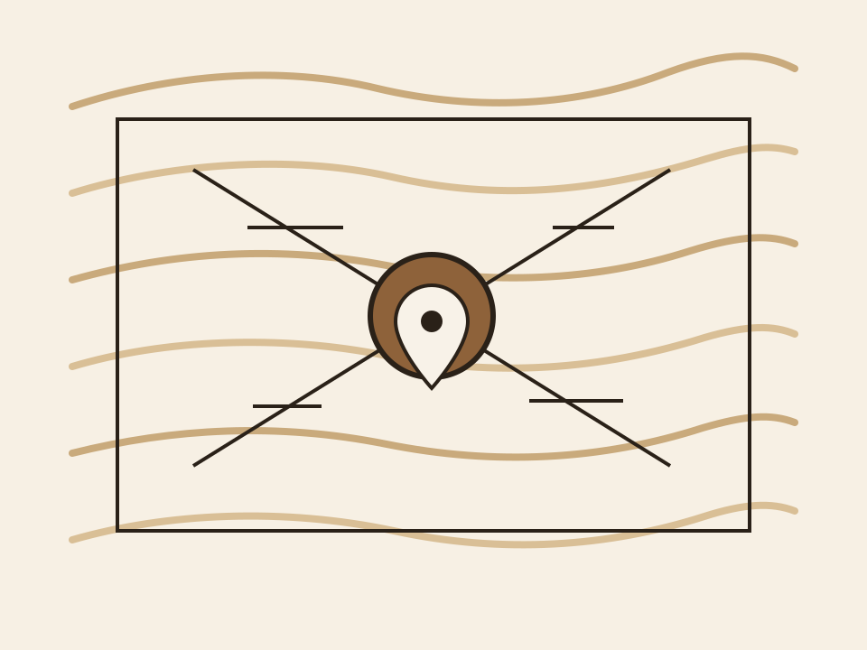

Lage
Lage der Die Alte Schreinerei AG in Appenzell
Mitten in Appenzell und nah am Alltag.
Die Lage verbindet gute Erreichbarkeit mit einem Umfeld, das zum Charakter des Projekts passt. So entsteht ein stimmiger Ort für Wohnen und Arbeiten.

Ortsbezug
Kurze Wege
Klare Adresse
Die Alte Schreinerei AG
Untere Blumenrainstrasse 4
9050 Appenzell
Schweiz
Standortqualität
Ein Standort mit Qualität und Präsenz.
- Zentrale Adresse in Appenzell
- Kurze Wege im täglichen Leben
- Ein Umfeld mit gewachsenem Charakter
Standort
Ein Ort, der zum Projekt passt.
Appenzell steht für Eigenständigkeit, Qualität und eine starke Identität. Genau diese Eigenschaften machen den Standort für das Projekt besonders attraktiv.
- Gute Adresse mit starker lokaler Wirkung
- Passendes Umfeld für Wohnen und Arbeiten
- Ein Standort mit eigenem Charakter
Vor Ort
Den Standort am besten vor Ort erleben.
Bei einer Besichtigung zeigen sich die Qualität der Lage, die Atmosphäre des Hauses und das Potenzial der Räume auf den ersten Blick.
Besichtigung anfragen
Weiter